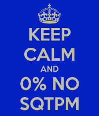

O sqtpm é um sistema que automatiza a recepção e a verificação da correção de trabalhos de programação. A primeira versão do sqtpm foi colocada no ar em 2004.
Os usuários devem escolher uma senha antes de entrar, selecionando o link senhas. Usuários são cadastrados pelo administrador do sistema. Se você deveria estar cadastrado e não está, contacte-o.
Provavelmente um dos alunos que usou o sistema foi quem criou o Keep-Calm abaixo, que encontrei casualmente há algum tempo e que achei muito bacana (gerado no keepcalm-o-matic.co.uk pelo usuário Thyakis em 2012).

Keep calm!
G.P. Telles